Settings#
Bounce#
Select the bouncing behavior, applies only when home position is known.
Nonewill not bounce at allBackwardwill bounce when moving backward at zero position.Forwardwill bounce when moving backward at position max (see setting Position Max).Both(default): Backward and Forward behavior combined.
 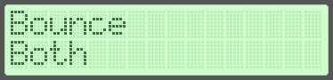
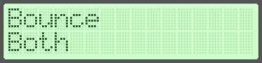
{kind=link}
Steps per Revolution#
Total number of steps per revolution, including microstepping for stepper motors.
 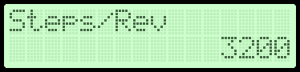
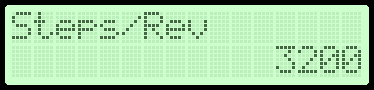
{kind=link}
Units per Revolution#
Metric(linear): millimeters of linear travel per revolution.Imperial(linear): inches of linear travel, per revolution.Degrees(angular): degrees of rotation per revolution.
In angular mode it is fixed at 360 degrees per revolution (unit = 1 degree).
 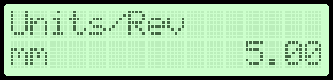
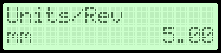
{kind=link}
Maximum Speed#
The maximum allowable speed is bounded by the maximum pulse generation frequency.
(See Stepper configuration section for details).
 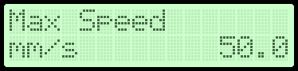
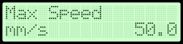
{kind=link}
Acceleration#
 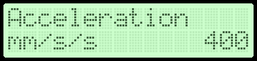
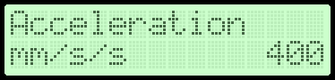
{kind=link}
Backlash#
The backlash to apply in selected units when changing direction of movement/rotation
 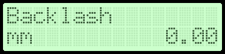
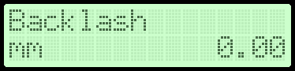
{kind=link}
Backlash Speed#
Select between Current and Maximum.
Currentuse current speed as configured by the user controlled potentiometer.Maximumuse maximum speed as configured by the Maximum Speed setting.
 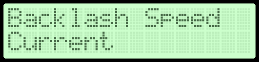
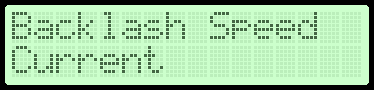
{kind=link}
Homing Speed#
The speed to use while searching for home position.
(See Limits & Homing section for details).
 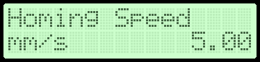
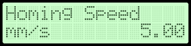
{kind=link}
Homing Direction#
Set the homing direction to either Forward or Backward.
 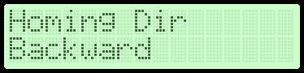
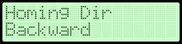
{kind=link}
Backoff Distance#
The distance to move back from the homing switch after it is triggered.
 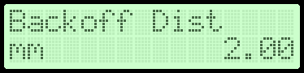
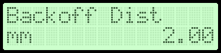
{kind=link}
Position Max#
The maximum position allowed to move forward, away from the home position (in current units).
Applies only when the home position is known.
 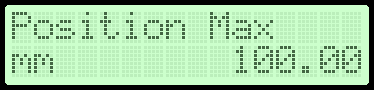
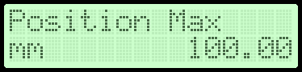
{kind=link}
Enable Pin#
Set if the enable pin should be active high or active low.
 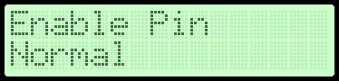
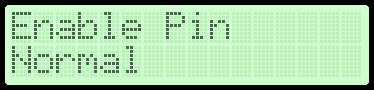
{kind=link}
Direction Pin#
Set if the direction pin should be active high or active low.
 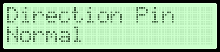
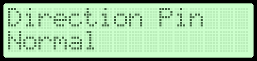
{kind=link}
Limit Pin#
Set the behavior of the limit switch pin. The external limit is triggered:
Falling Edgeon a transition from a logic high (5 Volts) to logic low (0 Volts).Rising Edgeon a transition from a logic low (0 Volts) to logic high (5 Volts).
{kind=link}
{kind=link}
Units#
Set the units to use. Changing the device units will reset all the unit related settings to their defaults and additionally reset the device status, e.g set position to zero and forget the home position
Millimeters(metric, linear mode): Steps:0.01 mm,0.01 mm,0.1 mm,0.5 mmand1.0 mm.Inches(imperial, linear mode): Steps:0.001 in,0.005 in,0.01 in,0.05 inand0.1 in.Degrees(angular mode): Steps from360/1 deg(1 step is 360 degrees) up to360/3600 deg(1 step is 0.1 degree).
 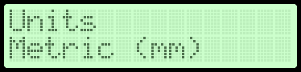
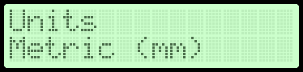
{kind=link}
Note
Requires a long press on the B type buttons to confirm the action.
Contrast#
Set the display contrast.
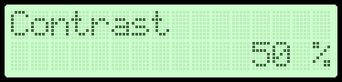{kind=link}
{kind=link}
Load Defaults#
Reset all settings to their defaults and reboot the device.
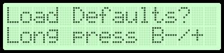{kind=link}

Note
Requires a long press on the B type buttons to confirm the action.